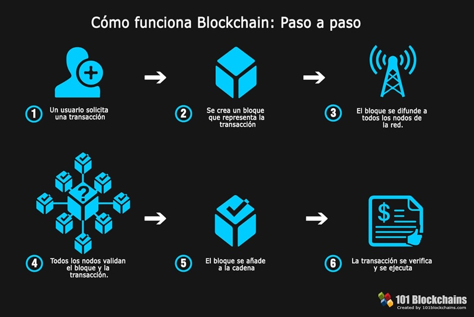

Blockchain es una tecnología que permite la transferencia de datos digitales con una codificación muy sofisticada y de una manera completamente segura. Sería como el libro de asientos de contabilidad de una empresa en donde se registran todas las entradas y salidas de dinero; en este caso hablamos de un libro de acontecimientos digitales. Pero además, contribuye con una tremenda novedad: esta transferencia no requiere de un intermediario centralizado que identifique y certifique la información, sino que está distribuida en múltiples nodos independientes entre sí que la registran y la validan sin necesidad de que haya confianza entre ellos. Una vez introducida, la información no puede ser borrada, solo se podrán añadir nuevos registros, y no será legitimada a menos que la mayoría de ellos se pongan de acuerdo para hacerlo.
